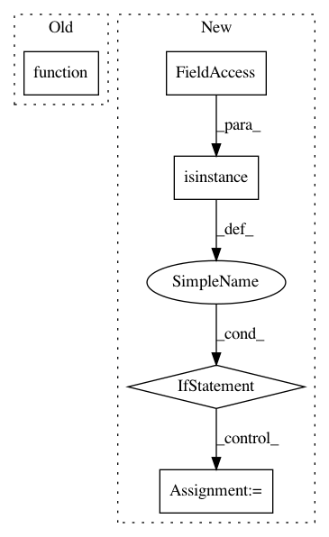

509bd66caee215c622ce3e44eea08b0625491b26,art/classifiers/keras.py,KerasClassifier,_initialize_params,#KerasClassifier#Any#Any#Any#Any#Any#,55
Before Change
// Set loss, grads and prediction functions
self._preds_op = preds
self._loss = k.function([self._input], [loss])
self._loss_grads = k.function([self._input, label_ph], [loss_grads])
self._preds = k.function([self._input], [preds])
// Get the internal layer
After Change
logger.warning("Keras model has no loss set. Trying to use `k.sparse_categorical_crossentropy`.")
loss_function = k.sparse_categorical_crossentropy
else:
if isinstance(self._model.loss, six.string_types):
loss_function = getattr(k, self._model.loss)
else:
loss_function = getattr(k, self._model.loss.__name__)
self._use_logits = use_logits
if not use_logits:
if k.backend() == "tensorflow":
if custom_activation:
In pattern: SUPERPATTERN
Frequency: 3
Non-data size: 5
Instances
Project Name: IBM/adversarial-robustness-toolbox
Commit Name: 509bd66caee215c622ce3e44eea08b0625491b26
Time: 2019-03-11
Author: Maria-Irina.Nicolae@ibm.com
File Name: art/classifiers/keras.py
Class Name: KerasClassifier
Method Name: _initialize_params
Project Name: geomstats/geomstats
Commit Name: f0815a6bbb3af21866202175779e7acbb4b1bb1d
Time: 2021-03-24
Author: nicolas.guigui@inria.fr
File Name: geomstats/geometry/symmetric_matrices.py
Class Name: SymmetricMatrices
Method Name: apply_func_to_eigvals
Project Name: kundajelab/deeplift
Commit Name: 73c8519430f38e50db9180fec25daf3008e98c95
Time: 2018-07-03
Author: avanti.shrikumar@gmail.com
File Name: deeplift/util.py
Class Name:
Method Name: compile_func